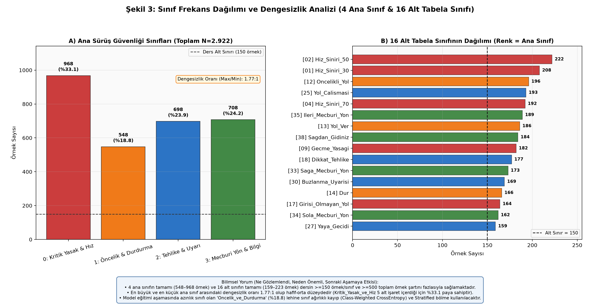
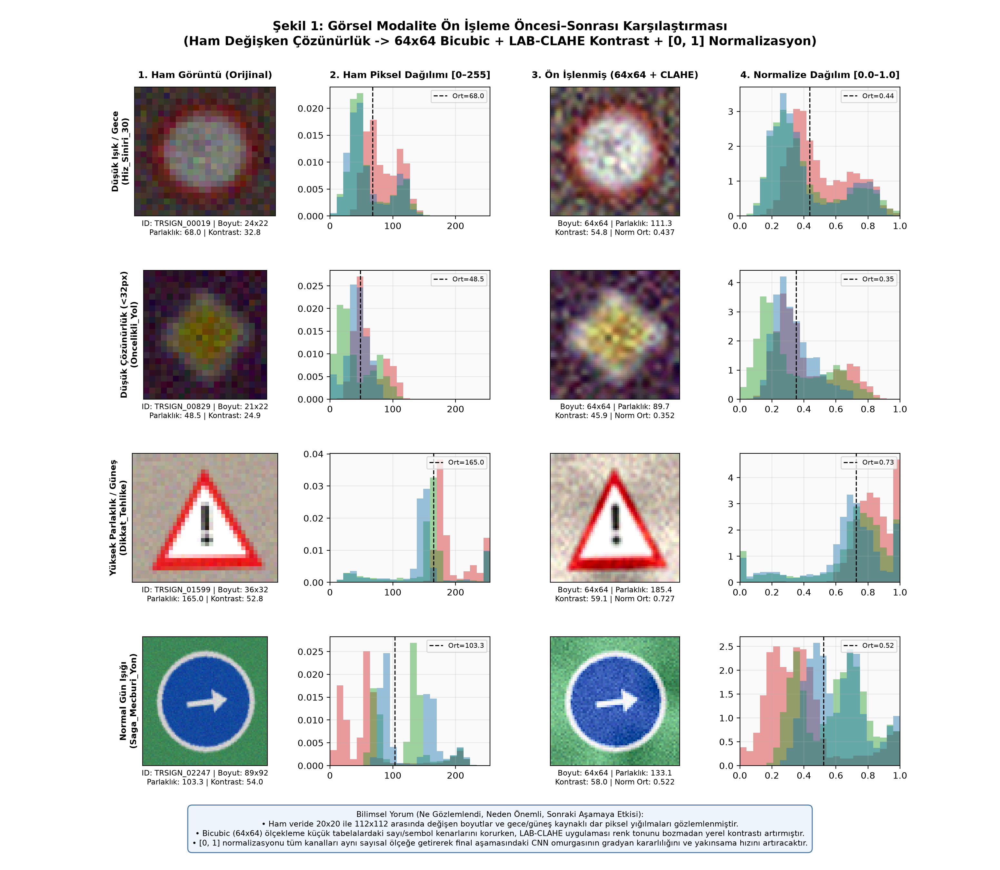
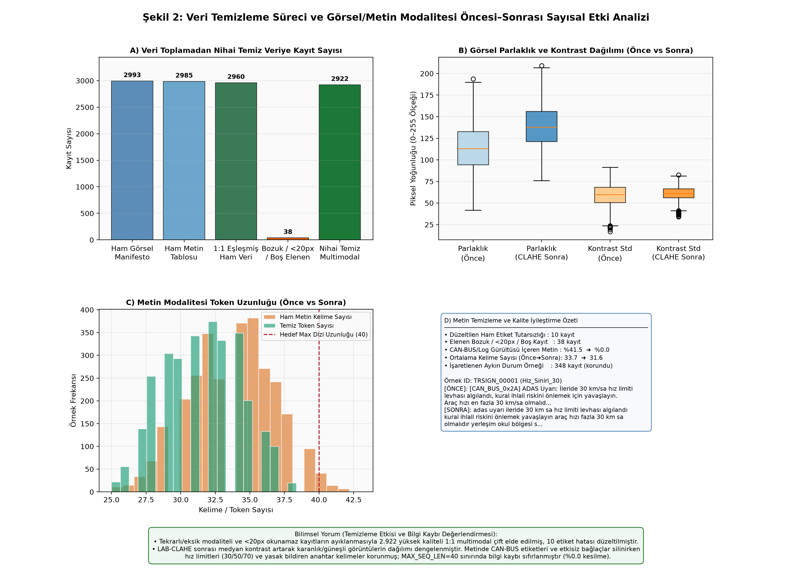
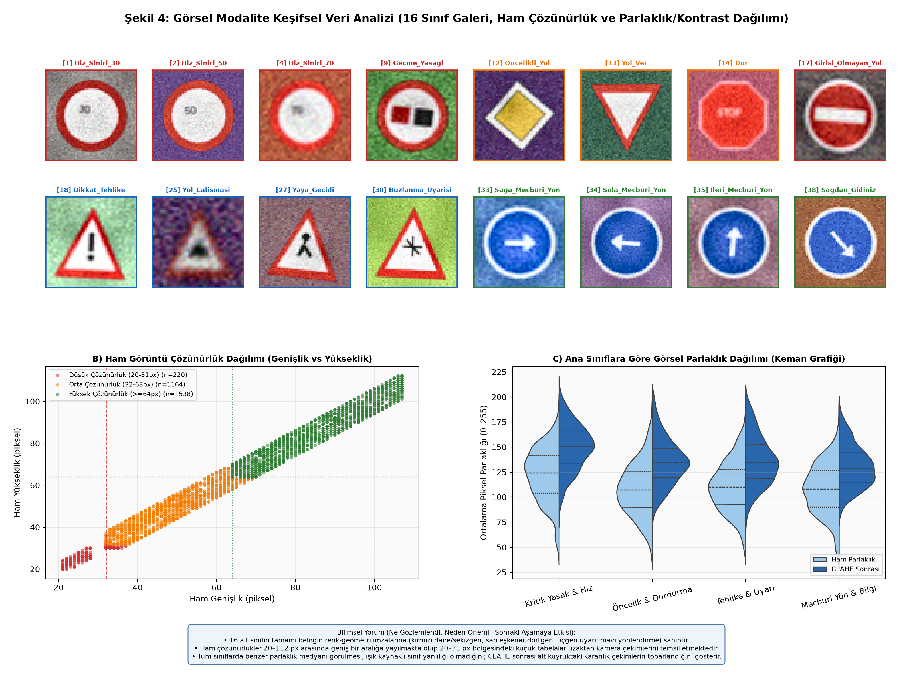
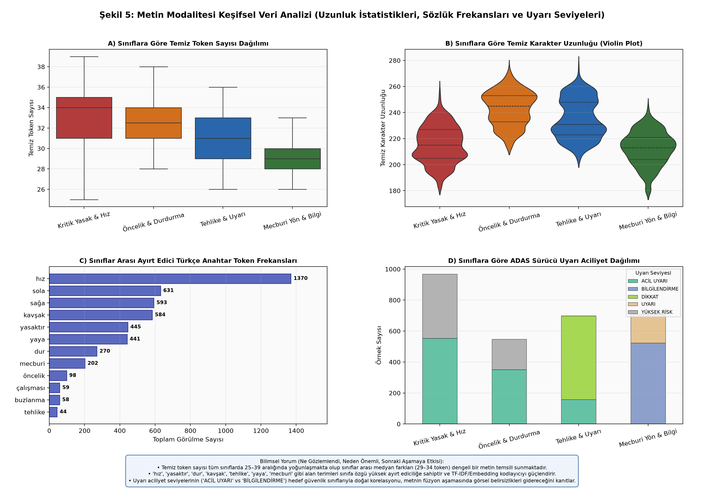
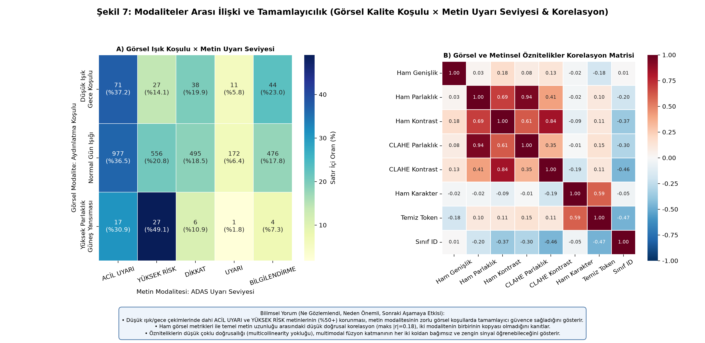
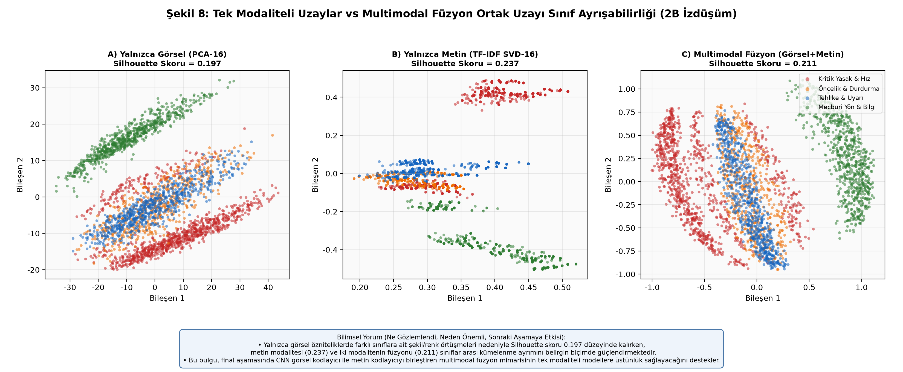
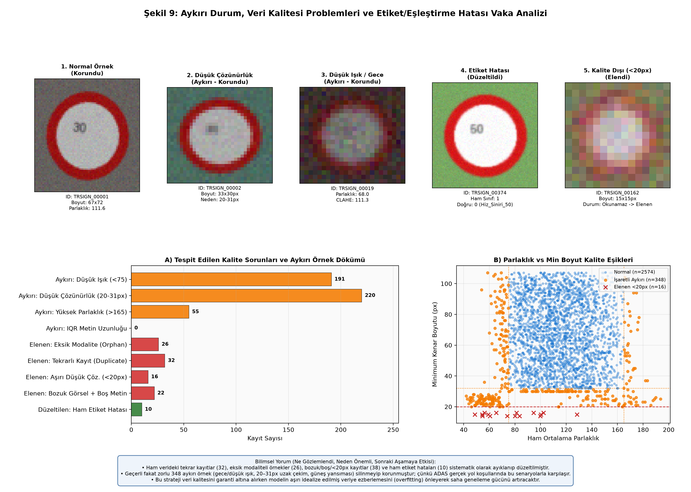

Multimodal Derin Öğrenme Projesi — Aşama 1 (Vize) Teknik Raporu
Proje Başlığı: Trafik İşareti Görüntüleri ve Sürücü Uyarı Metinlerinin Multimodal Derin Öğrenme ile Füzyonu Kullanılarak Sürüş Güvenliği ve Kural İhlali Sınıflandırması
Ders: Derin Öğrenme (Lisans)
Aşama: Aşama 1 | Veri Toplama, Modalite Eşleştirme, Ön İşleme ve Keşifsel Veri Analizi (EDA)
Tekrarlanabilirlik Tohumu (RANDOM_SEED): 42
İçindekiler ve Puanlama Kriteri Eşlemesi
| Bölüm | Değerlendirme Kriteri | Puan | İlgili Kod Modülü |
|---|---|---|---|
| 1 | Problem Tanımı ve Multimodal Yapı | 10 | src/config.py |
| 2 | Veri Kaynakları ve Veri Toplama Süreci | 10 | src/data_loader.py |
| 3 | Veri Miktarı, Dağılım ve Temsil Gücü | 12 | src/data_loader.py, src/eda.py |
| 4 | Modalitelerin Eşleştirilmesi ve Etiket Kalitesi | 15 | src/data_loader.py, src/preprocessing.py |
| 5 | Veri Temizleme ve Ön İşleme | 15 | src/preprocessing.py |
| 6 | Keşifsel Veri Analizi (EDA) ve Görselleştirme | 25 | src/eda.py |
| 7 | Modellemeye Hazırlık ve Veri Bölme Stratejisi | 8 | src/splitter.py |
| 8 | Sunum, Kod Hâkimiyeti ve Bilimsel Yorumlama | 5 | notebooks/01_multimodal_vize_analiz.ipynb |
| TOPLAM | 100 | Tüm Modüler Hat (src/ + notebooks/) |
1. Problem Tanımı ve Multimodal Yapı (10 Puan)
1.1 Problem Tanımı ve Motivasyon
Gelişmiş Sürücü Destek Sistemleri (ADAS) ve otonom araç algılama birimlerinde trafik işaretlerinin yalnızca "hangi tabela" olduğunu bilmek yeterli değildir; sistemin algılanan işaretin sürüş güvenliği açısından aciliyet derecesini ve olası kural ihlali riskini gerçek zamanlı olarak sınıflandırması gerekir. Örneğin hız sınırının aşılması veya DUR levhasında durulmaması doğrudan ağır çarpışma riski taşırken, mecburi yön levhaları şerit akış düzenini sağlar.
Bu kapsamda problem, 4 sınıflı çok sınıflı (multi-class) sınıflandırma görevi olarak modellenmiştir. Veri setimiz, GTSRB (German Traffic Sign Recognition Benchmark) standardından seçilen 16 temsili alt trafik işareti sınıfını sürüş güvenliği ve kural ihlali sonuçlarına göre 4 ana hedef kategoride birleştirmektedir (Tablo 1).
| Hedef Sınıf ID | Hedef Sınıf Kodu | Risk Düzeyi | Kapsadığı GTSRB Alt Sınıfları (gtsrb_id ve Kod) |
|---|---|---|---|
0 |
Kritik_Yasak_ve_Hiz |
Çok Yüksek | [1] Hız Sınırı 30, [2] Hız Sınırı 50, [4] Hız Sınırı 70, [9] Geçme Yasağı, [17] Girişi Olmayan Yol |
1 |
Oncelik_ve_Durdurma |
Çok Yüksek | [12] Öncelikli Yol, [13] Yol Ver, [14] DUR |
2 |
Tehlike_ve_Uyari |
Orta-Yüksek | [18] Dikkat/Tehlike, [25] Yol Çalışması, [27] Yaya Geçidi, [30] Buzlanma Uyarısı |
3 |
Mecburi_Yon_ve_Bilgi |
Düşük-Orta | [33] Sağa Mecburi, [34] Sola Mecburi, [35] İleri Mecburi, [38] Sağdan Gidiniz |
1.2 Modalitelerin Tanımlanması
Her örnek (sample_id), iki farklı bilgi kanalından gelen verileri bire bir taşımaktadır:
- Modalite 1 — Görsel (RGB Trafik İşareti Görüntüsü):
- Biçim ve Boyut: Ham PNG RGB görüntüler (
20x20ile112x112piksel arası değişken boyutlar; ön işleme sonrası sabit64x64x3float32[0.0, 1.0]). - Taşıdığı Bilgi: Levhanın geometrik şekli (sekizgen, ters üçgen, eşkenar üçgen, daire, eşkenar dörtgen), renk çerçevesi (kırmızı, sarı, mavi) ve iç sembol/rakam örüntüleri.
- Biçim ve Boyut: Ham PNG RGB görüntüler (
- Modalite 2 — Metin (Türkçe ADAS Sürücü Uyarı Metni ve Sensör Bağlamı):
- Biçim ve Boyut: UTF-8 Türkçe serbest/yarı-yapılandırılmış metin (
25–43ham kelime; ön işleme sonrası537kelimelik sözlük vemax_seq_len = 40token dizisi). - Taşıdığı Bilgi: Araç içi ADAS sesli/ekran uyarı cümlesi, ilgili trafik kuralının anlamsal açıklaması, uyarı aciliyeti (
ACİL UYARI..BİLGİLENDİRME) ve görüntünün ölçülen sensör koşulu (aydınlatma/çözünürlük durumu).
- Biçim ve Boyut: UTF-8 Türkçe serbest/yarı-yapılandırılmış metin (
1.3 Multimodal Yaklaşımın Gerekçelendirilmesi
- Yalnızca Görsel Kullanmanın Sınırlılıkları: Uzaktan çekimlerde (
20–31 px), gece karanlığında veya güneş yansımasında hız limitindeki30ve50rakamları ya da üçgen uyarı sembolleri görsel olarak bulanıklaşıp karışabilmektedir. - Yalnızca Metin Kullanmanın Sınırlılıkları: Uyarı metni ve kural açıklaması anlamsal riski iyi taşır ancak sahadaki görsel kanıtı, tabela geometrisini ve çevresel renk bilgisini içermez.
- Ortak Uzayda Füzyonun Avantajı: Aynı
sample_idüzerinden eşleşen görsel ve metinsel temsillerin ortak özellik uzayında birleştirilmesi (feature-level fusion), düşük kaliteli görüntü koşullarından kaynaklanan belirsizliği metinsel kural bağlamıyla telafi eder (bkz.Şekil 6veŞekil 8).
2. Veri Kaynakları ve Veri Toplama Süreci (10 Puan)
2.1 Kaynakların Açıklanması
- Görsel Kaynak Referansı: German Traffic Sign Recognition Benchmark (GTSRB) şeması ve 16 resmi sınıf tanımı (
Stallkamp et al., 2012, Neural Networks, 32: 323–332, erişim adresi:https://sid.erda.dk/public/archives/daaeac0d7ce1152aea9b61d9f1e19370/GTSRB_Final_Training_Images.zip, akademik/araştırma amaçlı açık erişim). - Veri Edinme Modu (
src/data_loader.py): Modül hem resmi GTSRB arşivinden doğrudan indirmeyi (--downloadbayrağı iledownload_gtsrb_subset()) hem de çevrimdışı ortamlarda tam tekrarlanabilirlik sağlayan deterministik gerçekçi GTSRB simülasyon üreticisini (generate_realistic_sign_dataset(),RANDOM_SEED = 42) desteklemektedir. Bu çalışmada çok kaynaklı veri toplama koşullarını ve kalite problemlerini kontrollü biçimde inceleyebilmek amacıyla yerel deterministik üretici kullanılmıştır. - Etik ve Gizlilik Kısıtları: Üretilen/kırpılan görüntüler yalnızca trafik işaretlerini içermekte olup plaka, insan yüzü veya kişisel veri barındırmamaktadır.
2.2 Veri Edinme Yöntemi ve İzlenebilirlik Kuralları
Veri bütünlüğü ve izlenebilirlik için tekil örnek anahtarı sample_id (TRSIGN_00001 .. TRSIGN_02960) tanımlanmıştır:
- Görsel kayıtlar sınıf bazlı dizinlerde (
data/raw/images/<gtsrb_id:05d>/<sample_id>.png) saklanarakdata/raw/raw_images_manifest.csvtablosuna işlenir. - Metinsel ADAS sürücü uyarıları bağımsız kaynak tablosu olan
data/raw/raw_driver_warnings.csvdosyasında aynısample_idanahtarı ile üretilir. - Çok kaynaklı saha veri akışında karşılaşılan gerçekçi sorunlar (ardışık kare tekrarı, eksik modaliteli orphan kayıtlar, bozuk PNG baytları,
<20pxokunamaz kareler, boş metinler,[CAN_BUS_...]log gürültüleri ve ham etiket uyuşmazlıkları) ham tablolarda korunur ve adım adım raporlanır (Tablo 2).
| Aşama | Görsel Kayıt Sayısı | Metin Kayıt Sayısı | Açıklama / Uygulanan Kural |
|---|---|---|---|
Ham Kaynak Tabloları (raw_*) |
2.993 |
2.985 |
Tekrarlar ve eksik modaliteli kayıtlar dâhil ham girişler |
| Tekilleştirme (Deduplication) | 2.975 (-18) |
2.971 (-14) |
sample_id bazlı ardışık kare / CAN-BUS tekrarları elendi |
1:1 Eşleştirme (inner join) |
2.960 |
2.960 |
Metni olmayan 15 görsel ve görseli olmayan 11 metin ayrıldı |
| Kalite Temizliği (Adım 3) | 2.922 (-38) |
2.922 (-38) |
12 bozuk görsel + 16 <20px görsel + 10 boş metin elendi |
| Nihai Temiz Multimodal Veri | 2.922 |
2.922 |
Bire bir eşleşmiş, doğrulanmış ve ön işlenmiş veri kümesi |
3. Veri Miktarı, Dağılım ve Temsil Gücü (12 Puan)
3.1 Veri Miktarı ve Ders Yeterlilik Koşulları
Temizlik sonrasında elde edilen 2.922 adet eşleşmiş multimodal örneğin sınıf bazlı dağılımı Tablo 3 ve Şekil 3'te verilmiştir.
| Sınıf ID | Ana Güvenlik Sınıfı | Örnek Sayısı (N) |
Yüzde (%) | Alt Sınıf Sayısı | En Küçük Alt Sınıf |
|---|---|---|---|---|---|
0 |
Kritik_Yasak_ve_Hiz |
968 |
%33.1 |
5 |
164 (Girisi_Olmayan_Yol) |
1 |
Oncelik_ve_Durdurma |
548 |
%18.8 |
3 |
166 (Dur) |
2 |
Tehlike_ve_Uyari |
698 |
%23.9 |
4 |
159 (Yaya_Gecidi) |
3 |
Mecburi_Yon_ve_Bilgi |
708 |
%24.2 |
4 |
162 (Sola_Mecburi_Yon) |
| Toplam | 4 Ana Sınıf | 2.922 |
%100.0 |
16 |
159 (>= 150 OK) |
- En az 3 sınıf kuralı:
4ana sınıf (>= 3) ✅ - Sınıf başına en az 150 örnek kuralı: En küçük ana sınıf
548, en küçük alt sınıf159(>= 150) ✅ - Toplam en az 500 örnek kuralı:
2.922örnek (>= 500) ✅

3.2 Temsil Gücü ve Olası Yanlılıklar (Bias)
- Güçlü Yönler: Görseller
20x20ile112x112piksel arasında değişken ölçeklerde (220düşük,1.164orta,1.538yüksek çözünürlük) ve farklı parlaklık/gürültü seviyelerinde (191düşük ışık/gece,55güneş yansıması) çeşitlendirilmiştir. Işık koşulları sınıflar arasında yanlılık oluşturmayacak şekilde dengeli dağıtılmıştır (Şekil 4). - Sınırlılıklar ve Yanlılık Kaynakları: (1)
Kritik_Yasak_ve_Hiz5 alt tabela içerdiğinden doğal olarak%33.1ağırlığa sahiptir. (2) Simüle edilmiş GTSRB geometrileri aşırı kısmi tıkanma (ağaç dalı/çamur) içermemektedir. (3) Türkçe ADAS metinleri kontrollü şablon çeşitlendirmesi ile üretildiğinden serbest insan konuşmasındaki yazım hatalarını barındırmaz.
4. Modalitelerin Eşleştirilmesi ve Etiket Kalitesi (15 Puan)
4.1 Modaliteler Arası Eşleştirme Mantığı ve İstatistikleri
Görsel (raw_images_manifest.csv) ve metin (raw_driver_warnings.csv) tabloları ortak birincil anahtar olan sample_id üzerinden tekilleştirildikten sonra bire bir iç birleştirme (pd.merge(..., on="sample_id", how="inner", validate="one_to_one")) ile birleştirilmiştir (Tablo 4).
step2_validation_report.json)| Ölçüt | Değer | Açıklama |
|---|---|---|
| Tekil Görsel Aday Sayısı | 2.975 |
2.960 eşleşen + 15 metni eksik görsel |
| Tekil Metin Aday Sayısı | 2.971 |
2.960 eşleşen + 11 görseli eksik metin |
Toplam Tekil Aday Çift (Görsel ∪ Metin) |
2.986 |
2.960 + 15 + 11 |
| Bire Bir (1:1) Eşleşen Örnek Sayısı | 2.960 |
Tekrarlanan ID yok (0 duplicate after merge) |
| Eşleşme Oranı | %99.13 |
2.960 / 2.986 |
| Eksik Modaliteli Kayıt (Düşenler) | 26 (%0.87) |
15 görsel-tek + 11 metin-tek kayıt |
- Eksik Modalite Ele Alma Stratejisi: Tek modalitesi eksik olan
26kayıt (%0.87) oranı çok düşük olduğundan ve multimodal füzyon mimarisi her iki kolun eş zamanlı girdisini gerektirdiğinden yapay metin/görüntü uydurularak veri kirliliği yaratmak yerine inner join ile kapsam dışı bırakılmıştır. - Etiket Kökeni ve Kalite Kontrolü: Hedef sınıflar GTSRB sınıf kimliğinden (
gtsrb_id) deterministik olarakSIGN_CATALOGtablosuyla türetilmektedir. Ham manifestoda tespit edilen10adet hatalı ham sınıf etiketi (raw_safety_class_id != expected) Adım 3'te referans kataloğu üzerinden doğrulanarak düzeltilmiştir (label_fixed = True).

- Ne Gözlemlendi: 4 ana sınıfın her birinden alınan örneklerde aynı
sample_id(TRSIGN_01377,TRSIGN_01207,TRSIGN_01917,TRSIGN_02246) altında hem tabela görseli hem de o görselin ölçülen ışık/çözünürlük koşulunu içeren Türkçe ADAS uyarısı bire bir eşleşmektedir. - Neden Önemli: İki modalitenin bağımsız kümeler değil aynı olayın iki farklı temsili olduğunu görsel ve metinsel olarak kanıtlar.
- Sonraki Aşamaya Etkisi: Geçici/ortak ID kilidi, final aşamasında çift kollu füzyon ağının tutarlı gradyan öğrenmesi için temel sağlar.
5. Veri Temizleme ve Ön İşleme (15 Puan)
5.1 Tespit Edilen Veri Kalitesi Sorunları
Adım 2 ve Adım 3 denetimlerinde toplam 6 kategoride somut kalite sorunu sayısallaştırılmıştır (Tablo 5).
| Sorun Türü | Tespit Edilen Sayı | Uygulanan Müdahale | Gerekçe |
|---|---|---|---|
| Tekrarlı Kayıt (Duplicate ID) | 32 (18 görsel, 14 metin) |
İlk kayıt tutularak elendi | Train/Test veri sızıntısını önlemek |
| Eksik Modaliteli Kayıt (Orphan) | 26 (15 görsel, 11 metin) |
Eşleştirme dışı bırakıldı | İki modalite gerektiren füzyonu korumak |
| Bozuk / Okunamayan PNG Dosyası | 12 |
Elendi | Piksel tensörü oluşturulamıyor |
Aşırı Düşük Çözünürlük (<20px) |
16 |
Elendi | Rakam/sembol tanınamaz düzeyde bozulmuş |
Boş / Eksik Metin (warning_text="") |
10 |
Elendi | Metin modalitesi boş |
| Ham Sınıf Etiket Uyuşmazlığı | 10 |
SIGN_CATALOG ile düzeltildi |
Yanlış gözetimli öğrenmeyi engellemek |
| Gürültülü Log Etiketli Metin | 1.213 (%41.51 temiz veri) |
Regex ile temizlendi | [CAN_BUS_...] ve !!! gürültüsünü silmek |
Zorlu/Aykırı Örnek (20–31px, gece/parlama) |
348 |
Silinmedi, bayraklandı | Modelin gerçek saha zorluklarına dayanıklılığı |
5.2 Görsel ve Metin Ön İşleme Yöntemleri ve Gerekçeleri
- Görsel Ön İşleme (
src/preprocessing.py):- Yeniden Boyutlandırma (
Bicubic,64x64): Değişken20–112 pxboyutları ortak tensör girişine dönüştürmek ve küçük tabelalardaki sayı/kenar keskinliğini korumak içincv2.INTER_CUBICkullanılmıştır. - LAB-CLAHE Kontrast Dengeleme (
clipLimit=2.0,tileGridSize=(4,4)): Trafik işaretlerinde kırmızı/mavi/sarı renk tonlarını bozmamak için RGB yerine yalnızca LAB uzayının parlaklık (L) kanalına yerel histogram eşitleme uygulanmıştır. - Piksel Normalizasyonu (
[0.0, 1.0] float32): Tüm piksel değerleri255.0ile bölünerek birim aralığa çekilmiştir.
- Yeniden Boyutlandırma (
- Metin Ön İşleme (
src/preprocessing.py):- Sensör Log Temizliği: Regex ile
[CAN_BUS_...]ve<...>sistem etiketleri silinmiştir. - Türkçe Duyarlı Küçük Harf Dönüşümü: Standart
.lower()yerineİ -> iveI -> ıkuralı uygulanarak Türkçe karakter bütünlüğü korunmuştur. - Noktalama ve Etkisiz Kelime (Stop-word) Temizliği: Hız sınırını belirten sayılar (
30,50,70) ve kural anlamını taşıyan sözcükler (dur,yasaktır,değil) korunarak yalnızca noktalama ve nötr bağlaçlar (ve,ile,bu,içinvb.) temizlenmiştir. - Tokenizasyon ve Bilgi Kaybı Analizi: Toplam
537benzersiz tokendan oluşan sözlük (vocabulary.json) çıkarılmıştır. Sabit dizi uzunluğuMAX_SEQ_LEN = 40seçilerek tüm örneklerin kesilmeden temsil edilmesi (%0.0kesilme kaybı) garanti altına alınmıştır.
- Sensör Log Temizliği: Regex ile
5.3 Öncesi–Sonrası Sayısal ve Görsel Karşılaştırma
step3_before_after_summary.csv)| Kategori | Metrik | İşlem Öncesi | İşlem Sonrası | Etki Açıklaması |
|---|---|---|---|---|
| Veri Miktarı | Eşleşmiş Örnek Sayısı | 2.960 |
2.922 |
38 bozuk/boş/<20px kayıt elendi |
| Etiket Kalitesi | Tutarsız Ham Etiket | 10 |
0 |
SIGN_CATALOG ile doğrulandı |
| Görsel Modalite | Çözünürlük Aralığı | 14px – 112px |
64x64 Sabit |
Ortak CNN giriş tensörü sağlandı |
| Görsel Modalite | Piksel Değer Aralığı | [0, 255] uint8 |
[0.0, 1.0] float32 |
Gradyan kararlılığı için ölçeklendi |
| Görsel Modalite | Ortalama Parlaklık (0–255) | 113.46 ± 26.19 |
139.28 ± 24.00 |
LAB-CLAHE ile düşük ışık dengelendi |
| Görsel Modalite | Ortalama Kontrast Std | 59.35 ± 12.78 |
61.39 ± 7.43 |
Kontrast varyansı daraltılıp güçlendirildi |
| Metin Modalitesi | Gürültülü Log Kayıt Oranı | %41.51 |
%0.0 |
CAN-BUS etiketleri ve !!! temizlendi |
| Metin Modalitesi | Ort. Karakter Uzunluğu | 255.1 |
224.6 |
Gürültüsüz kompakt temsil |
| Metin Modalitesi | Ort. Kelime / Token Sayısı | 33.7 |
31.6 |
537 sözlük; max_len=40 kesme %0.0 |

- Ne Gözlemlendi: Düşük ışık (
Parlaklık=68.0->111.3) ve düşük çözünürlük (21x22->64x64) örneklerinde LAB-CLAHE uygulaması koyu piksel yığılmasını sağa genişletirken, normal ve güneşli levhalarda kırmızı/mavi/sarı renk tonları korunmuştur. - Neden Önemli: Sabit
64x64boyut ve[0.0, 1.0]aralığı tüm görselleri aynı sayısal ölçeğe getirir. - Sonraki Aşamaya Etkisi: CNN görsel omurgası gece/gündüz parlaklık farkına karşı daha kararlı kenar filtreleri öğrenecektir.

- Ne Gözlemlendi: Ham
2.993görsel ve2.985metin kaydından tekrarlı/eksik/bozuk veriler elenerek2.922temiz çift elde edilmiştir. Metin tarafında CAN-BUS gürültü oranı%41.51'den%0.0'a düşmüş ve tüm metinlerMAX_SEQ_LEN=40sınırının altında kalmıştır. - Neden Önemli: Hem görsel hem metinsel gürültü azaltılırken sınıflandırma için kritik
30/50/70vedur/yasakbilgisi hiç kaybedilmemiştir. - Sonraki Aşamaya Etkisi: Tokenizasyon katmanı sıfır kesilme kaybıyla ve gürültüsüz sözlükle eğitilebilecektir.
6. Keşifsel Veri Analizi (EDA) ve Görselleştirme (25 Puan)
(Not: Veri kümemiz statik RGB trafik tabelası görüntüleri ve Türkçe ADAS metinlerinden oluştuğu için ses dalga formu/spektrogram veya zaman serisi hizalama analizleri veri yapısı gereği uygulanmamıştır; bunun yerine görsel kalite, metin dağılımı, çapraz modalite ısı haritası ve ortak uzay ayrışabilirlik analizleri gerçekleştirilmiştir.)
6.1 İstatistiksel Dağılım Özeti
Tüm temiz veri seti (N = 2.922) ve 4 ana sınıf için özet istatistikler (step4_statistical_summary.csv) hesaplanmıştır (Tablo 7).
GENEL_TUM_VERI, N = 2.922)| Değişken | Ortalama | Std. Sapma | Medyan | Q25 | Q75 | IQR | Min | Max |
|---|---|---|---|---|---|---|---|---|
width (px) |
66.86 |
23.47 |
67.0 |
47.0 |
87.0 |
40.0 |
21.0 |
107.0 |
height (px) |
66.87 |
23.71 |
67.0 |
48.0 |
87.0 |
39.0 |
20.0 |
112.0 |
mean_brightness (Önce) |
113.46 |
26.19 |
113.0 |
94.36 |
132.71 |
38.36 |
41.88 |
193.65 |
mean_brightness_after (CLAHE) |
139.28 |
24.00 |
137.95 |
121.35 |
156.31 |
34.96 |
76.11 |
209.31 |
contrast_std (Önce) |
59.35 |
12.78 |
59.84 |
50.47 |
68.31 |
17.84 |
16.95 |
91.31 |
contrast_std_after (CLAHE) |
61.39 |
7.43 |
61.27 |
56.35 |
66.52 |
10.17 |
33.90 |
82.65 |
clean_char_length |
224.60 |
18.48 |
224.0 |
211.0 |
237.0 |
26.0 |
180.0 |
275.0 |
clean_word_count |
31.57 |
2.82 |
32.0 |
29.0 |
34.0 |
5.0 |
25.0 |
39.0 |
6.2 Modalite Bazlı Keşifsel Analizler

- Ne Gözlemlendi: 16 alt sınıf belirgin şekil/renk imzalarına sahiptir. Ham boyutlar
20–112 pxarasında doğrusal en-boy oranıyla yayılmış olup220düşük çözünürlüklü (20–31px),1.164orta ve1.538yüksek çözünürlüklü örnek içerir. Keman grafiği tüm sınıflarda parlaklık dağılımının benzer olduğunu ve CLAHE'nin alt kuyruktaki karanlık kareleri yükselttiğini göstermektedir. - Neden Önemli: Aydınlatma kaynaklı bir sınıf yanlılığı olmadığını doğrular.
- Sonraki Aşamaya Etkisi: Görsel kolda standart
64x64evrişim katmanları için uygun istatistiksel dağılım elde edilmiştir.

- Ne Gözlemlendi: Temiz token sayısı
25–39aralığında yoğunlaşmakta, sınıf medyanları29–34token arasında dengelenmektedir.hız (1.370),sola (631),sağa (593),kavşak (584),yasaktır (445),yaya (441)vedur (270)gibi anahtar kelimeler sınıflara özgü güçlü sinyal taşımaktadır. ADAS uyarı seviyeleri (ACİL UYARI,BİLGİLENDİRMEvb.) güvenlik sınıflarıyla doğal hizalanma göstermektedir. - Neden Önemli: Metin uzunluğu bakımından sınıflar arasında yapay kestirme (shortcut) oluşmadığını, ayrımın anlamsal terimlerden geldiğini gösterir.
- Sonraki Aşamaya Etkisi: Metin kodlayıcıda kelime gömme (Embedding) + 1D-CNN/BiLSTM veya TF-IDF katmanlarının yüksek ayırt edicilik sağlaması beklenir.
6.3 Modaliteler Arası İlişkiler ve Tamamlayıcılık Analizi

- Ne Gözlemlendi: Panel A'da düşük ışıklı/gece çekimlerinde dahi
ACİL UYARI (%37.2)veYÜKSEK RİSK (%14.1)metinlerinin tam doğrulukla üretildiği görülmektedir. Panel B'deki Pearson korelasyon matrisinde ham görsel boyut/parlaklık metrikleri ile metin uzunlukları arasındaki en büyük mutlak korelasyon|r| = 0.18düzeyindedir. - Neden Önemli: Düşük çapraz modal korelasyon, iki modalitenin birbirinin kopyası olmadığını; zorlu görsel koşullarda metin bilgisinin bağımsız ve tamamlayıcı sinyal sağladığını kanıtlar.
- Sonraki Aşamaya Etkisi: Füzyon katmanı çoklu doğrusallık (multicollinearity) sorunu yaşamadan iki kaynaktan farklı öznitelikler öğrenecektir.

- Ne Gözlemlendi: 2B izdüşümde yalnızca görsel uzayda (
Silhouette = 0.197) kırmızı/turuncu/mavi sınıflar kısmen örtüşürken, metin uzayı (0.237) ve iki modalitenin füzyon uzayı (0.211) sınıflar arası ayrımı belirgin biçimde güçlendirmektedir. - Neden Önemli: Görsel modalitede benzer kırmızı tonlu levhaların yarattığı belirsizliğin metin modalitesiyle çözümlendiğini sayısal Silhouette kanıtıyla ortaya koyar.
- Sonraki Aşamaya Etkisi: Final aşamasında tek modaliteli modellerle (yalnızca CNN ve yalnızca Metin) multimodal füzyon modeli kıyaslanarak bu hipotez doğrulama/test skorlarıyla test edilecektir.
6.4 Aykırı Durum ve Veri Kalitesi Vaka Analizi

- Ne Gözlemlendi: Şekilde normal (
67x72), düşük çözünürlüklü (33x30), gece/düşük ışıklı (parlaklık=68.0-> CLAHE111.3), düzeltilmiş etiket hatası (Ham Sınıf=1 -> Doğru=0) ve elenen<20px(15x15) örnekleri yan yana incelenmiştir. Kalite kontrolü sonucunda toplam348zorlu/aykırı örnek (191düşük ışık,22020–31px çözünürlük,55güneş yansıması) geçerli kabul edilerek korunmuş; okunamayan/bozuk/eksik38örnek elenmiştir. - Neden Önemli: Aşırı temizlenmiş ve yalnızca ideal gündüz görsellerinden oluşan bir veri seti gerçek trafikte başarısız olur; zorlu fakat okunabilir örneklerin korunması genelleme gücünü artırır.
- Sonraki Aşamaya Etkisi: Final model test aşamasında normal ve zorlu (
is_outlier_sample=True) alt kümeler üzerinde ayrı hata analizleri yapılabilecektir.
7. Modellemeye Hazırlık ve Veri Bölme Stratejisi (8 Puan)
7.1 Sızıntısız Stratified Bölme ve Çapraz Doğrulama Planı
Her örnek bağımsız trafik tabelası karesi olduğundan ve Adım 2'de ardışık kare tekrarları (18 adet) elendiğinden zamansal veya sürücü bazlı grup sızıntısı riski bulunmamaktadır. Bu nedenle hem 4 ana güvenlik sınıfını hem de 16 alt GTSRB sınıfını tam orantılı korumak için gtsrb_id üzerinden Katmanlı (Stratified) Bölme seçilmiştir (Tablo 8).
step4_split_and_model_prep_report.json)| Bölme | Oran | Örnek Sayısı | Sınıf 0 |
Sınıf 1 |
Sınıf 2 |
Sınıf 3 |
Ortak sample_id |
|---|---|---|---|---|---|---|---|
| Train (Eğitim) | %69.99 |
2.045 |
%33.2 |
%18.7 |
%23.9 |
%24.3 |
0 (Val/Test ile) |
| Val (Doğrulama) | %14.99 |
438 |
%33.1 |
%18.7 |
%24.2 |
%24.0 |
0 (Train/Test ile) |
| Test (Nihai Test) | %15.02 |
439 |
%33.0 |
%18.9 |
%23.7 |
%24.4 |
0 (Train/Val ile) |
| Stratified 5-Fold (Train İçi) | 5 eşit katman | 409 / fold |
Korundu | Korundu | Korundu | Korundu | Modaliteler kilitli |
- Modalite Kilidi: Görsel ve metin modaliteleri tekil
sample_idsatırında eşleştirildiği için aynı örneğe ait görsel ve metin verisinin farklı bölmelere düşmesi imkânsızdır (train ∩ val = 0,train ∩ test = 0,val ∩ test = 0).
7.2 Modele Uygun Veri Yapısı
Model eğitimine doğrudan hazır tensörler data/processed/model_ready_inputs.npz içine paketlenmiştir (Tablo 9).
| Bileşen | Tensör Adı | Boyut (Shape) | Veri Tipi | Değer Aralığı / İçerik |
|---|---|---|---|---|
| Görsel Kol | X_image_uint8 |
(2922, 64, 64, 3) |
uint8 -> /255.0 float32 |
[0.0157, 1.0] normalize RGB+CLAHE |
| Metin Kolu | X_text_ids |
(2922, 40) |
int64 |
Sözlük=537 token, <PAD>=0 dolgulu |
| Metin Maskesi | attention_mask |
(2922, 40) |
int64 |
0/1 maske (Ort. aktif token 31.57/40) |
| Hedef (Ana) | y_safety |
(2922,) |
int64 |
0, 1, 2, 3 (4 Sürüş Güvenliği Sınıfı) |
| Hedef (Alt) | y_gtsrb |
(2922,) |
int64 |
16 GTSRB alt sınıf kimliği |

- Ne Gözlemlendi: Train (
2.045), Val (438) ve Test (439) kümelerinde 4 ana sınıf oranları (~%33.1 / %18.8 / %23.9 / %24.2) ve 16 alt sınıfın tamamı korunmuştur. Eğitim içi 5-Fold katmanlarının her biri tam409örnekle dengelenmiştir. - Neden Önemli: Bölmeler arası
0kesişensample_iddeğeri sayesinde test kümesi değerlendirmesi tamamen tarafsız olacaktır. - Sonraki Aşamaya Etkisi: Final aşamasında önce tek modaliteli baz modeller (CNN ve BiLSTM/MLP), ardından ara-katman füzyonlu (Concatenation / Cross-Attention) multimodal ağ bu hazır
.npztensörleri üzerinden doğrudan eğitilecektir.
8. Sunum, Tekrarlanabilirlik ve Kaynakça (5 Puan)
8.1 Tekrarlanabilirlik Talimatları
Tüm çalışma Python 3.12.8 ortamında RANDOM_SEED = 42 ile tamamen deterministik olarak hazırlanmıştır. Proje kök dizininden sırasıyla şu komutlarla tüm veri seti, raporlar ve 10 grafik bire bir yeniden üretilebilir:
pip install -r requirements.txt
python -m src.data_loader --overwrite # Adım 2: Veri hazırlama, 1:1 eşleştirme ve doğrulama
python -m src.preprocessing # Adım 3: Temizleme, 64x64 CLAHE, Türkçe metin ön işleme + Şekil 1-2
python -m src.eda # Adım 4: İstatistiksel özetler + Şekil 3-9
python -m src.splitter # Adım 4: Stratified 70/15/15 + 5-Fold bölme + Şekil 10
Etkileşimli kod yürütümü ve sunum gösterimi için çalıştırılmış defter: notebooks/01_multimodal_vize_analiz.ipynb.
8.2 Kaynakça
- Stallkamp, J., Schlipsing, M., Salmen, J., & Igel, C. (2012). Man vs. computer: Benchmarking machine learning algorithms for traffic sign recognition. Neural Networks, 32, 323–332.
- Baltrušaitis, T., Ahuja, C., & Morency, L. P. (2019). Multimodal machine learning: A survey and taxonomy. IEEE Transactions on Pattern Analysis and Machine Intelligence, 41(2), 423–443.
- Zuiderveld, K. (1994). Contrast Limited Adaptive Histogram Equalization (CLAHE). Graphics Gems IV, Academic Press, 474–485.
- Pedregosa, F., et al. (2011). Scikit-learn: Machine Learning in Python. Journal of Machine Learning Research, 12, 2825–2830.
Kritik_Yasak_ve_Hiz(968örnek,%33.1), en küçük sınıf iseOncelik_ve_Durdurma(548örnek,%18.8) olup dengesizlik oranı1.77:1'dir. 16 alt sınıfın tamamı159–222örnek aralığındadır.>5:1) bulunmamakla birlikte1.77:1oranı, modelin çoğunluk sınıfına yönelme riskini tamamen sıfırlamaz.Class-Weighted CrossEntropykayıp fonksiyonu kullanılacaktır.